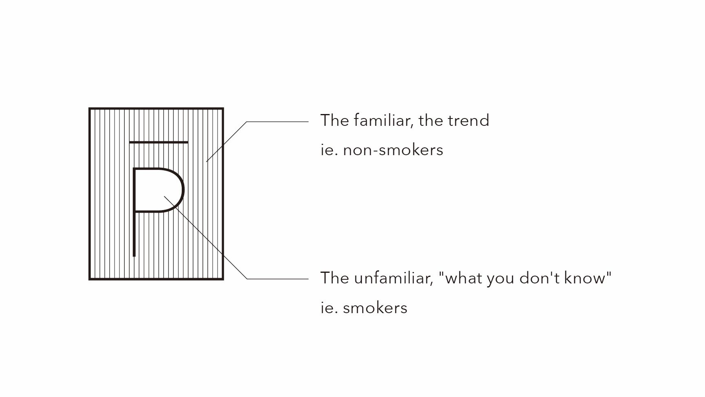
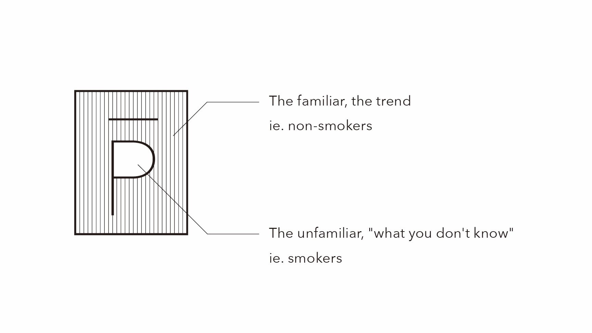

A campaign to reinterpret smoking
Perceiving ¬P
An installation of a white room displaying a bubble-producing tank and ten objects representing stories about smoking
PROJECT PERIOD: JULY 2018 – JAN 2019
SIZE: 4400×4900×2400
MATERIAL: Wood, tiles, plastic, metal, fabric, clay, glass, paper, oil, air compressor, etc.
 

ISSUE: Until high school, we were educated to understand smoking as “a threat to health”; however when I entered university and the number of friends who were smokers increased, my notion of smoking changed. Although I was never tempted to smoke myself, at least seeing various sides and values to smoking demolished my preconceptions of smoking. In hindsight, it felt odd that the public perception of smoking was so singular. If the majority were merely letting themselves follow the trend without giving this topic much thought, I hypothesised the possibility of reaching a solution through empathising with smokers. Furthermore, I wanted to address smokers who I felt sometimes smoked without motivation, just because the cigarette was there in front of them.


IDEA: Perceiving ¬P is a campaign to rethink the act of smoking from different perspectives. Embedded into the walls of the white space are symbolic objects representing ten stories about smoking told by ten people. In the centre is a piece of artwork that simulates the state of mind smokers experience during smoking.
The title and the logo expresses the concept of the project: understanding people with different perspectives to yours. "¬" is a sign of negation, and "P" stands for “proposition”, ”people”, and “perspectives”. In the context of smoking, there are two meanings to this title: for non-smokers, to think about smokers who do not conform to the trend to abolish smoking; and for smokers, to consider the viewpoints of non-smokers and other smokers.